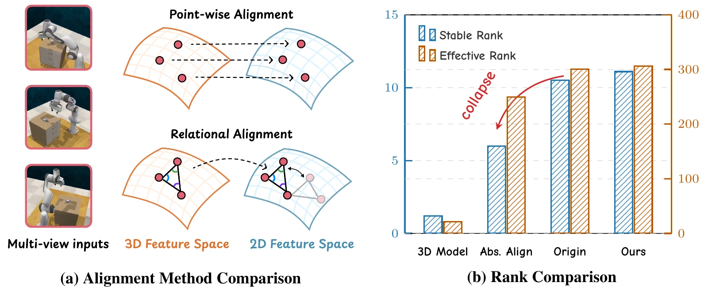
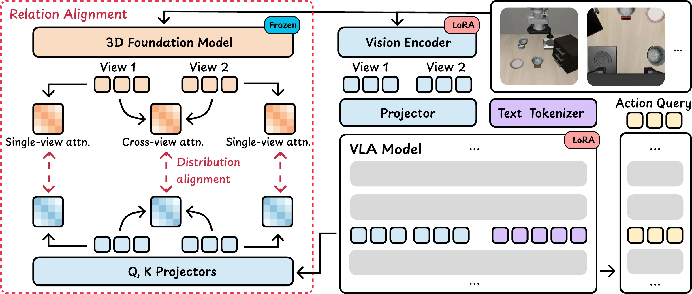
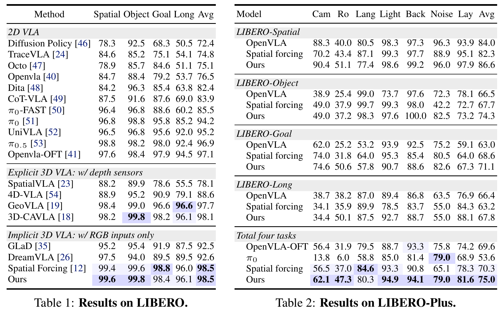
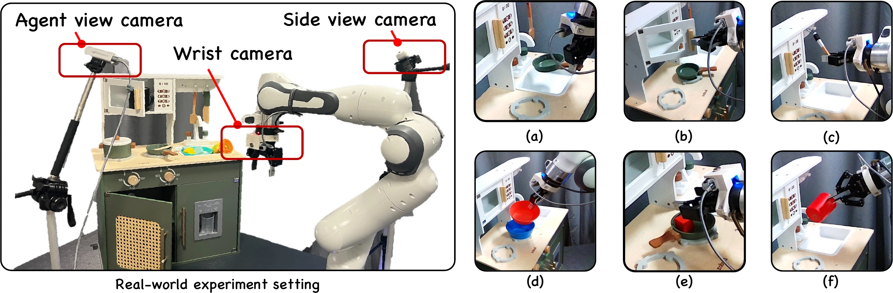
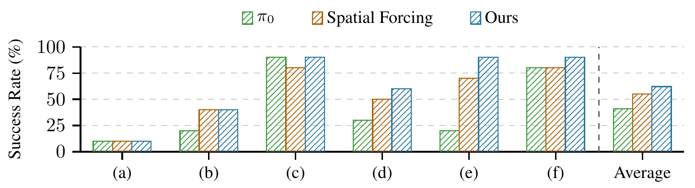

Motivation
Can we teach a VLA model spatial knowledge while preserving its representation capacity?
Direct feature alignment can collapse the VLA feature space.
RIGID aligns spatial relationships to transfer spatial knowledge while preserving expressivity.


Abstract
Spatial understanding is essential for robots to perceive their surrounding environments and execute actions. Existing approaches typically encode 3D awareness into vision-language-action (VLA) models by directly aligning their representations with pre-trained 3D foundation models. However, we observe that such direct geometric feature alignment essentially exploits 3D foundation priors as a form of low-rank regularization in the feature space, resulting in severe rank collapse of the pre-trained VLA representations. In contrast, we shift the focus from enforcing point-wise equality to aligning pair-wise relationships. We propose a representation-alignment method that enables the injection of 3D spatial awareness without compromising the model's original expressivity. Extensive experiments on public benchmarks, our new spatial reasoning benchmark, and real-world manipulation scenarios demonstrate that our approach effectively incorporates 3D spatial representations into VLA reasoning, achieving robust performance and strong open-world generalization across diverse manipulation tasks.
Method Overview
We extract self- and cross-attention (attn.) maps from both the VLA and the 3D foundation models to serve as relational affinity matrices.


Experiment Results
RIGID matches the best reported average on LIBERO at 98.5% and reaches 75.0% on LIBERO-Plus.


Real-world Experiments
Six kitchen manipulation tasks on a Franka Emika Panda, using wrist and side-view RGB cameras. With a π₀ backbone, RIGID achieves the highest reported average success rate among the three evaluated methods.



